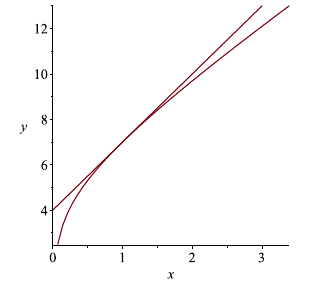

3.6 Derivatives of Logarithmic and Inverse TrigonometricFunctions
Logarithmic Derivatives
So far, we have differentiated polynomials, rational functions, trigonometric functions, and exponential functions. The obvious missing type of function from this list is the logarithmic function. In this chapter, we look at the derivatives of logarithmic functions.
Theorem (Log Derivatives): Let \(x > 0\). Then \[\dfrac{d}{dx} \ln(x) = \dfrac{1}{x} \hspace{0.51in} \text{and} \hspace{0.51in} \dfrac{d}{dx} \log_a(x) =\dfrac{1}{x\ln a}.\]
We prove this theorem in the next section. For now, we try a few examples.
Example: Let \(y = \ln(x) + 4\log_3(x)\). Find the derivative of \(y\).
Solution: From our log derivatives, we find that \[y^{\prime} = \dfrac{1}{x} + \dfrac{4}{x\ln(3)}.\]
Example: Let \(y = \ln(x^2 + 2x + 5)\). Find the derivative of \(y\).
Solution: Here, \(\ln(x^2 + 2x + 5)\) is a composite function. So, we use the chain rule and the derivative of \(\ln(x)\). Differentiating, we find that \[y^{\prime} = \dfrac{1}{x}(2x + 2) = \dfrac{2x + 2}{x}.\]
Example: Let \(f(x) = \dfrac{\ln(x)}{e^x\ln(2x + 5)}\). Find \(f^{\prime}(x)\).
Solution: We proceed using the quotient rule. Let \(u = \ln(x)\) and \(v = e^x\ln(2x+5)\). Then \(u^{\prime} = \dfrac{1}{x}\) and \(v^{\prime} = e^x\ln(2x+5) + \dfrac{e^x}{2x+5}(2)\) with the second derivative coming from the product rule. Now, \[\begin{align*} f^{\prime}(x) &= \dfrac{d}{dx} \dfrac{\ln(x)}{e^x\ln(2x+5)}\\ &= \dfrac{d}{dx} \dfrac{u}{v}\\ &= \dfrac{u^{\prime}v - v^{\prime}u}{v^2}\\ &= \dfrac{\dfrac{1}{x}e^x\ln(2x+5) - (e^x\ln(2x+5) + \dfrac{2e^x}{2x+5}\ln(x)}{(e^x\ln(2x+5))^2}\\ &= \dfrac{e^x(\dfrac{\ln(2x+5)}{x} - \ln(x)\ln(2x+5) + \dfrac{2\ln(x)}{2x+5})}{(e^x\ln(2x+5))^2}\\ &= \dfrac{\dfrac{\ln(2x+5)}{x} - \ln(x)\ln(2x+5) + \dfrac{2\ln(x)}{2x+5}}{e^x(\ln(2x+5))^2}. \end{align*}\] Therefore, \[f^{\prime}(x) = \dfrac{\dfrac{\ln(2x+5)}{x} - \ln(x)\ln(2x+5) + \dfrac{2\ln(x)}{2x+5}}{e^x(\ln(2x+5))^2}.\]
Example: Let \(f(x) = \ln(x) + 2x + 5\). Find the equation of the tangent line at the point \(x = 1\).
Solution: We begin by finding the \(y\) coordinate of \(f\) when \(x = 1\). \[f(1) = \ln(1) + 2(1) + 5 = 7.\] Now, we find the equation of the tangent line at \((1,7)\). We first find the derivative \[f^{\prime}(x) = \dfrac{1}{x} + 2.\] So, \(f^{\prime}(1) = 3\). Therefore, the equation of the tangent line at \((1,7)\) is \(y - 7 = 3(x-1)\).
|  |
|---|
Practice Problems
- Find the derivative.
- \(y = \log_2(x)\)
- \(f(x) = \log_3(4x-5)\)
- \(y = \ln(\sin(x))\)
- \(f(x) = \ln(\sqrt{x^2 + 5})\)
- \(y = \log_{10}(x + \sqrt{6 + x^2})\)
- \(f(x) = \log_6(\log_7(x))\)
- \(y = \ln(\sec(x) + \tan(x))\)
- \(f(x) = \dfrac{e^x}{\ln(2x)}\)
- \(y = \cos(x)\ln(x)\)
- \(f(x)= \dfrac{x}{\log_2(x) + sqrt{x}}\)
- Find the equation of the tangent line at the given point.
- \(y = \log(x) + 1\) at \(a = 1\)
- \(y = \ln(x+e)\sin(x)\) at \(a = 0\)
- \(y = \dfrac{e^x}{\ln(-x)}\) at \(a = -1\)
- \(y = \ln(\cos(x)) + 2\) at \(a = 0\)
Proof of Logarithmic Derivative Laws
In this section, we prove \(\dfrac{d}{dx} \log_a(x) =\dfrac{1}{x\ln a}\).
We begin with a lemma.
Lemma: If \(f\) and \(g\) are differentiable and inverses of each other, then \[g^{\prime}(x) = \dfrac{1}{f^{\prime}(g(x))}.\]
Proof: Since \[f(g(x)) = x,\] we use the chain rule to find that \[\dfrac{d}{dx} f(g(x)) = \dfrac{d}{dx} x \hspace{0.3in} \Longleftrightarrow \hspace{0.3in} f^{\prime}(g(x))g^{\prime}(x) = 1.\] Therefore, \[g^{\prime}(x) = \dfrac{1}{f^{\prime}(g(x))},\] as required.
We note, as an example, that \(f(x) = x^2\) is the inverse of \(g(x) = \sqrt{x}\) on \([0,\infty)\) and \(f^{\prime}(x) = 2x\). Using the lemma, we find that \[g^{\prime}(x) = \dfrac{1}{f^{\prime}(g(x))} = \dfrac{1}{2(\sqrt{x})}.\]
Theorem (Derivatives of Log Functions): Let \(x > 0\). Then \[\dfrac{d}{dx} \ln(x) = \dfrac{1}{x} \hspace{0.51in} \text{and} \hspace{0.51in} \dfrac{d}{dx} \log_a(x) =\dfrac{1}{x\ln a}.\]
Proof: We prove the second part, and note that the first part follows as a special case. If we let \(f(x) = a^x\) and \(g(x) = \log_a(x)\) are inverses of each other. We note that \(f^{\prime}(x) = a^x\ln(a)\). By the lemma, \[g^{\prime}(x) = \dfrac{1}{f^{\prime}(g(x))} = \dfrac{1}{a^{\log_1(x)}\ln(a)} = \dfrac{1}{x\ln(a)}.\]
Logarithmic Differentiation
In this chapter, we examine some methods of differentiating that involve functions that we do not, as yet, know how to differentiate. In particular, we differentiate functions of the form \(f(x)^{g(x)}\).
Example: Suppose \(y = x^x\). Find \(\dfrac{dy}{dx}\).
Solution: We do not have a formula for the derivative of \(x^x\). However, we can turn the problem into one that we can solve by taking logs on both sides. \[\begin{align*} y &= x^x\\ \ln(y) &= \ln(x^x)\\ \ln(y) &= x\ln(x). \end{align*}\] Now, from here, we can differentiate both sides implicitly using the product rule on the right side of the equation. \[\begin{align*} \ln(y) &= x\ln(x)\\ \dfrac{1}{y} \dfrac{dy}{dx} &= \ln(x) + \dfrac{1}{x} x\\ \dfrac{dy}{dx} &= y\left(\ln(x) + 1\right)\\ \dfrac{dy}{dx} &= x^x\left(\ln(x) + 1\right), \end{align*}\] with the final step resulting from \(y = x^x\). Therefore, \[\dfrac{dy}{dx} = x^x(\ln(x) + 1).\]
Example: Suppose \(y = (x^2 + 1)^{\sin(x)}\). Find \(\dfrac{dy}{dx}\).
Solution: We can again use the trick of taking logarithms on both sides. \[\begin{align*} y &= (x^2 + 1)^{\sin(x)}\\ \ln(y) &= \ln((x^2 + 1)^{\sin(x)})\\ \ln(y) &= \sin(x)\ln(x^2 + 1). \end{align*}\] Now, from here, we can differentiate both sides implicitly using the product rule on the right side of the equation. \[\begin{align*} \ln(y) &= \sin(x)\ln(x^2 + 1).\\ \dfrac{1}{y} \dfrac{dy}{dx} &= \cos(x)\ln(x^2+1) + \dfrac{2x}{x^2+1}\sin(x)\\ \dfrac{dy}{dx} &= y\left(\cos(x)\ln(x^2+1) + \dfrac{2x}{x^2+1}\sin(x)\right)\\ \dfrac{dy}{dx} &= \sin(x)\ln(x^2+1)\left(\cos(x)\ln(x^2+1) + \dfrac{2x}{x^2+1}\sin(x)\right). \end{align*}\] Therefore, \[\dfrac{dy}{dx} = \sin(x)\ln(x^2+1)\left(\cos(x)\ln(x^2+1) + \dfrac{2x}{x^2+1}\sin(x)\right).\]
One final example shows how we can use logarithmic differentiation to simplify complicated product or quotient rules.
Example: Suppose \(y = \dfrac{e^x}{\sqrt{2x+1}\ln(x)}\). Find \(\dfrac{dy}{dx}\)
Solution: Clearly, we have a quotient rule problem with the denominator being a product of two functions (and therefore, when we differentiate it, we will also need the product rule). We simplify by taking logs on both sides. \[\begin{align*} y &= \dfrac{e^x}{\sqrt{2x+1}\ln(x)}\\ \ln(y) &= \ln(\dfrac{e^x}{\sqrt{2x+1}\ln(x)})\\ \ln(y) &= \ln(e^x) - \ln(\sqrt{2x+1}) - \ln(\ln(x))\\ \ln(y) &= x - \dfrac{1}{2}\ln(2x+1) - \ln(\ln(x)). \end{align*}\] Now, from here, we can differentiate both sides implicitly. \[\begin{align*} \ln(y) &= x - \dfrac{1}{2}\ln(2x+1) - \ln(\ln(x))\\ \dfrac{1}{y} \dfrac{dy}{dx} &= 1 - \dfrac{1}{2}\dfrac{2}{2x+1} - \dfrac{1}{\ln(x)}\dfrac{1}{x}\\ \dfrac{dy}{dx} &= y\left(1 - \dfrac{1}{2x+1} - \dfrac{1}{x\ln(x)}\right)\\ \dfrac{dy}{dx} &= \dfrac{e^x}{\sqrt{2x+1}\ln(x)}\left(1 - \dfrac{1}{2x+1} - \dfrac{1}{x\ln(x)}\right)\\ \dfrac{dy}{dx} &= \dfrac{e^x(2x^2\ln(x) - 2x - 1)}{(2x+1)^{3/2}x\ln(x)^2}. \end{align*}\] Therefore, \[\dfrac{dy}{dx} = \dfrac{e^x(2x^2\ln(x) - 2x - 1)}{(2x+1)^{3/2}x\ln(x)^2}.\]
One should verify that this is exactly the same result that you would get by using the quotient rule.
Practice Problems
- Find \(\dfrac{dy}{dx}\).
- \(y = (4x^2 + 1)^{3x +1}\)
- \(y = x^{\tan(2x+1)}\)
- \(y = (2x + e^{3x})^{\cos(x)}\)
- \(y = x^{\ln(x)}\)
- \(y = (\sin(2x+1)^{6x}\)
- \(y = x^2(4-2x)^{1-x^2}\)
- \(y = (3x - 5)^7\sqrt{3x^2 + 2x + 1}\)
- \(y = \dfrac{\sin(2x^2 + 4x)}{(6-x^3)^4}\)
- \(y = \dfrac{\sqrt{5x-3}\sqrt[3]{1-3\cot(4x)}}{\sqrt[4]{x^2 + 4x}}\)
- \(y = \displaystyle \frac{{\sqrt {1 + \sin \left( {2x} \right)} }}{{2x - \tan \left( x \right)}}\)
Proof of the Power Rule
In this section, we prove \[\dfrac{d}{dx}x^n = nx^{n-1},\] for any \(n \in \mathbb{R}\). Thus far, we have only been able to prove the property if \(n \in \mathbb{Z}^+\).
Theorem (General Power Rule): Let \(y = x^n\) for \(n \in \mathbb{R}\). Then \[\dfrac{dy}{dx} = nx^{n-1}.\]
Proof: Let \(y = x^n\). Then \(\ln(y) = \ln(x^n)\) or that \(\ln(y) = n\ln(x)\). If we implicitly differentiate each side, we find that \[\dfrac{1}{y} \dfrac{dy}{dx} = \dfrac{n}{x}.\] The right side derivative follows since \(n\) is constant. Therefore, \[\dfrac{dy}{dx} = y\dfrac{n}{x} = \dfrac{nx^n}{x} = nx^{n-1}.\]
Practice Problems
Use logarithmic differentiation to prove the product rule.
Use logarithmic differentiation to prove the quotient rule.
Differentiate \(x^{x^x}\) and \(x^{x^{x^x}}\).